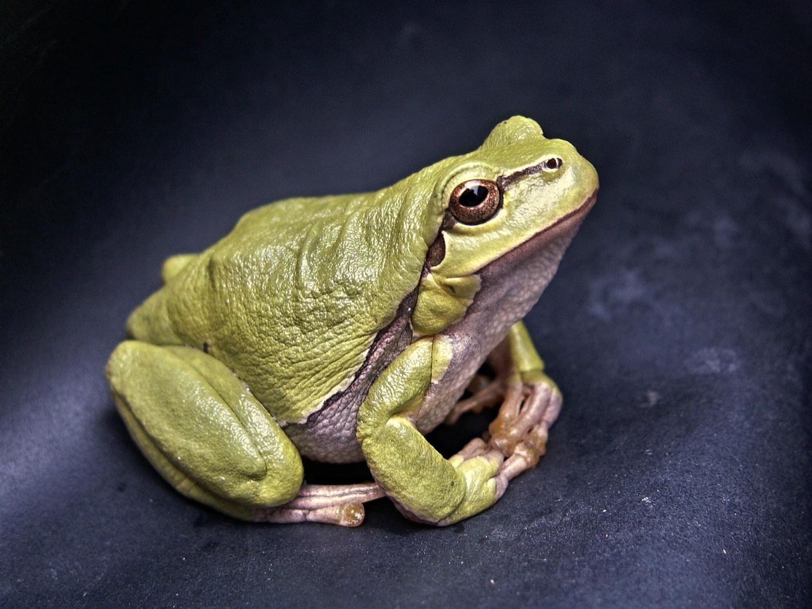
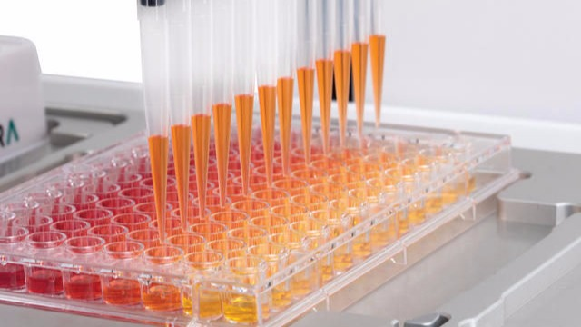

Worldwide surveys
Through the Earth Hologenome Initiative, we survey animals around the world using shared sampling and metadata procedures, making observations comparable across species, habitats and continents.
Evolutionary hologenomics · Copenhagen
In our Copenhagen lab, we combine fieldwork, experiments and genomic data to understand how animals and their microbiota change together.

Why we do this
Every animal carries a changing community of microorganisms. We built our research around measuring both at once, so we can see how hosts and microbes respond to diet, climate and other environmental changes.
That has taken us from sampling wild vertebrates to running controlled experiments, automating laboratory protocols and analysing multi-omic data.
How we work02 / Field
From observation to causality
We connect standardised surveys of animals in the wild with controlled experiments that let us move from observing microbiome patterns to testing what causes them—and what they cause in their hosts.
Through the Earth Hologenome Initiative, we survey animals around the world using shared sampling and metadata procedures, making observations comparable across species, habitats and continents.
At our ZIBA Animal Experimentation Centre, we can host wild animals under controlled conditions and test causal links between microbiome variation and host outcomes.

03 / Laboratory
Molecules at scale and in space
Our molecular laboratory supports DNA and RNA workflows from extraction and library preparation to technologies that preserve the small-scale spatial organisation of microbial communities.
We develop molecular approaches that reveal how microorganisms are organised at fine spatial scales, adding structure to conventional metagenomic measurements.
Automated liquid handling makes our DNA and RNA processing consistent and scalable across large sample collections.

04 / Computation
Infrastructure for open science
We turn molecular data into reproducible research on Mjolnir, our local high-performance computing system, using documented pipelines, software and analysis code that others can inspect and rerun.
Mjolnir gives us local capacity for demanding genomic and metagenomic analyses, while our bioinformatics pipelines keep processing consistent from raw reads to research-ready data.
We develop reusable software and generate and publish statistical code webbooks alongside our papers so every analytical step can be reviewed and our research is fully reproducible.

What we have built
The Earth Hologenome Initiative, 3D’omics and HoloFood grew from questions we could only answer by working with teams beyond Copenhagen.
What we publish
Papers, methods and datasets spanning animal microbiomes, hologenomics and molecular ecology.
All publicationsWork with us
Students, visiting researchers and postdocs join us in the field, at the bench and at the computer. Tell us what you would like to explore.